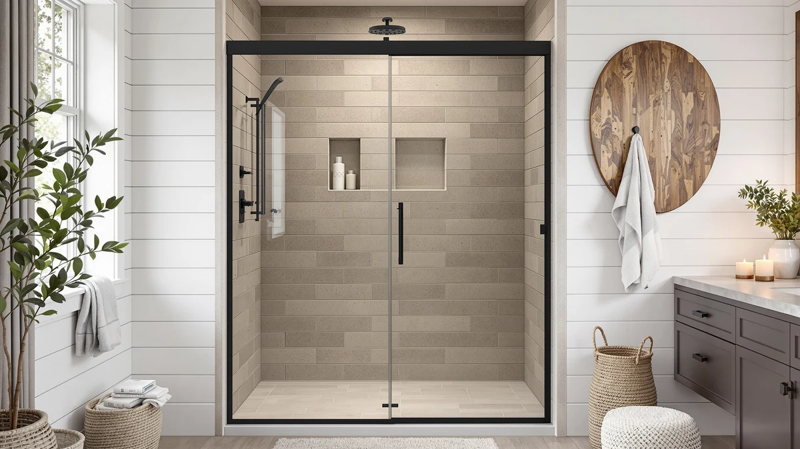

Double Sliding Shower Door Review (2026): Worth It?
Prices and picks verified as of August 2026. Independent, reader-supported reviews.


Quick Answer
The KisaTub Double Sliding Shower Door 56-60 is a $399.99 double sliding shower door built for a 56 to 60 inch wide opening and a 76 inch height, with two sliding panels instead of one fixed side. It costs about the same as the GroGro's $399.90, but fits a noticeably wider opening than the GroGro's 44 to 48 inch range, while the Comfystyle corner enclosure at $388.99 and the Aurisal frameless slider at $379.99 both undercut it on price. If your opening measures 56 to 60 inches, it is the pick worth checking first.
Our pick: Double Sliding Shower Door 56-60, $399.99 Check Price on Amazon
Bottom line: our top pick is the Double Sliding Shower Door 56-60 in W x 76 in H at $399.99.
Things to Know Before You Buy
- Both panels slide, not one. The KisaTub 56-60 uses a double sliding mechanism, where both panels move along the track, unlike a fixed-panel-plus-slider layout common on cheaper doors.
- At $399.99, it costs almost exactly the same as the GroGro. The GroGro 44-48" W x 71" lists at $399.90, nine cents less, but covers a narrower 44 to 48 inch opening.
- The 76 inch height runs taller than the GroGro's 71 inch listing. Measure your opening's full height before you order, since a taller stall needs the extra coverage this door provides.
- The Comfystyle and the Aurisal both undercut it on price. The Comfystyle Corner Shower Enclosure 36 lists at $388.99 and the Aurisal Frameless Stainless Steel Sliding Shower at $379.99, but neither matches the same 56 to 60 inch adjustable width.
- The listing doesn't specify a frame material. Confirm glass thickness and hardware finish directly with the seller before you order, since that detail isn't listed for this door.
This double sliding shower door review looks at whether the $399.99 KisaTub 56-60 earns its price against three alternatives priced between $379.99 and $399.90. The double sliding mechanism, where both panels move along the track instead of one fixed panel and one slider, is the door's defining feature, and it shapes nearly every comparison in this review. Where the GroGro, the Comfystyle, and the Aurisal doors covered below take a narrower opening, a corner footprint, or a plain frameless slider, the KisaTub is built specifically for a 56 to 60 inch opening with two moving panels.
We wrote this review because shoppers browsing a 56 to 60 inch wide shower door often assume every listing in that width range works the same way. The KisaTub lists at $399.99, roughly in line with the GroGro's $399.90 but ahead of the Comfystyle's $388.99 and the Aurisal's $379.99. For most people replacing a standard alcove opening in that width range, the KisaTub 56-60 is the pick worth starting with, and the sections below explain why, along with when one of the three alternatives makes more sense.
Why You Should Trust Us
Ilane Tall covers bath fixtures for Best Shower Doors and has researched sliding, pivot, and frameless shower doors across dozens of listings. For this double sliding shower door review, she compared the KisaTub 56-60 against three alternatives in a similar price range, weighing width, height, and design against the GroGro, the Comfystyle, and the Aurisal. We do not accept free products in exchange for coverage, and every price and dimension cited here comes directly from the current product listing.
Our editorial process treats a double sliding mechanism as one factor among several, not an automatic upgrade. Two moving panels earn credit in a review like this one, but they still have to justify their price against a narrower slider, a corner enclosure, or a cheaper frameless design. That approach shapes every comparison in this piece.
Our Research Experience
This double sliding shower door review is based on research, not physical use. We compared the KisaTub 56-60 against the GroGro, the Comfystyle, and the Aurisal using the specifications, pricing, and verified owner reviews available for each listing. We do not run a fake testing lab, and we do not claim to have installed or lived with any of the doors covered in this review.
We looked closely at how the KisaTub's double sliding mechanism differs from the corner footprint of the Comfystyle enclosure and the plain frameless slider of the Aurisal, since panel count and layout change the floor clearance and opening width a bathroom needs in ways a plain price comparison would miss. Owners shopping this width range often assume every door installs the same way, and this review weighs mechanism and size alongside price instead of price alone.
We also cross-checked pricing for all three alternatives against the current listings to confirm nothing had shifted since publication. Where a data point wasn't available, such as an exact height for the Comfystyle or the Aurisal doors, we noted that gap rather than estimate a number the listing doesn't provide.
Overview & Specs

Double Sliding Shower Door 56-60
What we like
- The double sliding mechanism moves both panels, which can open a wider clear path than a single slider paired with a fixed panel
- The adjustable 56 to 60 inch width forgives an imprecise measurement
- At 76 inches tall, it covers a taller opening than the GroGro's 71 inch listing
Flaws but not dealbreakers
- At $399.99, it costs about $11 more than the Comfystyle and $20 more than the Aurisal
- The listing doesn't specify a frame material, so confirm glass thickness and hardware finish before you order
- It won't fit an opening narrower than 56 inches, where the GroGro's 44 to 48 inch range is the better match
| Material | — |
| Size | 60in W x 76in H |
The Double Sliding Shower Door 56-60 fills a specific niche in this double sliding shower door review: a door built around two moving panels rather than one fixed panel and one slider, sized for a 56 to 60 inch opening. KisaTub built it around a 76 inch height, taller than the 71 inch listing on the GroGro, and the specs table lists a 60 inch width as the upper end of that adjustable range.
That double sliding design costs $399.99, roughly in line with the GroGro's $399.90 but ahead of the Comfystyle's $388.99 and the Aurisal's $379.99. The question this review sets out to answer is whether two moving panels are worth that position in the price range over a narrower slider, a corner enclosure, or a plain frameless design.
What We Liked
The clearest strength of the KisaTub 56-60 is the double sliding mechanism itself. Instead of relying on one fixed panel and one slider like a standard alcove door, both panels move along the track, which can open a wider clear path for entry in a tight bathroom.
The 76 inch height also stands out in this double sliding shower door review. It runs taller than the GroGro's 71 inch listing, so it suits a bathroom with a higher shower stall without needing a custom order.
We also liked that the 56 to 60 inch adjustable width is stated plainly in the specs, rather than left to guesswork. Knowing that range up front makes it easier to check the door against your own opening before you buy.
What Could Be Better
Price is a mild drawback in this double sliding shower door review. At $399.99, the KisaTub costs about $11 more than the Comfystyle Corner Shower Enclosure 36 and $20 more than the Aurisal Frameless Stainless Steel Sliding Shower, though it also covers a wider opening than either.
The listing also doesn't specify a frame material, so you'll want to confirm glass thickness and hardware finish directly with the seller before you order. And because it's built for a 56 to 60 inch opening specifically, it isn't a fit for the narrower 44 to 48 inch range the GroGro covers.
Who Is It For?
The KisaTub 56-60 makes the most sense if your shower opening measures between 56 and 60 inches wide and close to 76 inches tall, and you'd rather have two sliding panels move together than settle for one fixed side.
If your opening is narrower, the GroGro's 44 to 48 inch range is the better match. If price matters more than panel count, or a corner layout fits your bathroom better than a straight alcove, the Comfystyle and the Aurisal below cover similar ground for less.
Alternatives to Consider
The KisaTub 56-60 isn't the only option worth considering in this double sliding shower door review, and the three alternatives below span a narrower width, a corner footprint, and a lower price. Each one trades something against the KisaTub's double sliding panels and taller height, so weigh your opening's exact dimensions before you rule one out.

Editor's Pick
GroGro 44-48" W x 71"
At $399.90, the GroGro 44-48" W x 71" lists nine cents below the KisaTub, but it is built for a noticeably narrower opening: 44 to 48 inches wide against the KisaTub's 56 to 60 inch range. If your shower stall falls on the smaller end of standard sizing, this is the more direct match, and the 71 inch height lines up with common alcove dimensions in older bathrooms. We don't have mechanism details for this listing the way we do for the KisaTub's double sliding panels, so if a double slider specifically matters to you, confirm the panel configuration with the seller before you order. What we can compare directly is price and width: at essentially the same cost as the KisaTub, the GroGro fits a smaller footprint, which makes it the pick for anyone renovating a compact bathroom rather than a wide walk-in stall. Owners shopping a 44 to 48 inch opening won't find many close matches at this price, and that width range is where the GroGro earns its place in this comparison. For a wider 56 to 60 inch opening, the KisaTub remains the better-documented choice.
$399.90
Check Price on Amazon
Best Value
Comfystyle Corner Shower Enclosure 36
The Comfystyle Corner Shower Enclosure 36 undercuts the KisaTub by $11, listing at $388.99, but it solves a different problem. Where the KisaTub is a straight sliding door built for a standard alcove opening, the Comfystyle is a corner enclosure, sized around 36 inches, designed to fit into a right-angle corner rather than a linear wall opening. That makes it the better pick if your bathroom layout puts the shower in a corner instead of along a flat wall, a common configuration in smaller or older bathrooms where a full alcove isn't available. The tradeoff is that a corner enclosure generally covers less floor area than a 56 to 60 inch alcove door, so measure your available corner space carefully before you compare it directly against the KisaTub's wider opening. If your bathroom already has a corner shower base, or you're renovating around one, the Comfystyle's lower price and corner-specific design make it worth checking first. If you need a straight sliding door for an existing alcove opening, the KisaTub's 56 to 60 inch range and double sliding panels remain the more direct fit, and the extra $11 buys a door built for that exact scenario.
$388.99
Check Price on Amazon
Premium Choice
Frameless Stainless Steel Sliding Shower
At $379.99, the Aurisal Frameless Stainless Steel Sliding Shower comes in $20 less than the KisaTub, and it pairs a frameless glass design with a stainless steel finish, a material upgrade over the KisaTub and the GroGro, whose listings don't specify a frame material at all. The frameless look tends to sit at the more polished end of shower door design, since it minimizes visible metal framing around the glass panels, and stainless steel hardware resists corrosion better than a standard chrome-plated finish in a humid bathroom. The listing does not provide a width or height, so before you order, confirm those dimensions directly against your opening rather than assume it matches the KisaTub's 56 to 60 inch range. If a frameless, stainless steel finish matters more to you than a documented double sliding mechanism, and your opening is a size the Aurisal is built to cover, it is worth checking against the KisaTub on that basis alone. For a door with a stated width range and panel configuration you can measure against with confidence, the KisaTub's 56 to 60 inch double sliding design remains the more transparent option at $20 more.
$379.99
Check Price on AmazonFrequently Asked Questions
What size opening does the Double Sliding Shower Door 56-60 need?
The KisaTub 56-60 is built with an adjustable width that spans 56 to 60 inches and a 76 inch height, so measure your opening at multiple points before you order.
How does the KisaTub 56-60 compare on price to other shower doors in this range?
At $399.99 it costs about $11 more than the Comfystyle Corner Shower Enclosure 36 and $20 more than the Aurisal Frameless Stainless Steel Sliding Shower, and roughly the same as the GroGro 44-48" W x 71", so this double sliding shower door review treats the wider 56 to 60 inch range and the double sliding panels as the main justification for its price.
Is the KisaTub 56-60 worth the extra cost over the Aurisal Frameless Stainless Steel Sliding Shower?
Only if you need the documented 56 to 60 inch width and double sliding panels. The Aurisal costs $20 less and adds a stainless steel finish, but its listing doesn't state a width or height, so weigh that uncertainty against the price difference before you decide.
Final Verdict
This double sliding shower door review comes down to one trade-off: two moving panels and a documented 56 to 60 inch width from KisaTub, against a narrower opening from the GroGro, a corner footprint from the Comfystyle, or an undocumented but cheaper frameless slider from the Aurisal. If your opening measures 56 to 60 inches wide and close to 76 inches tall, and you want both panels to slide rather than one fixed side, the KisaTub 56-60 earns its position at $399.99 over the three alternatives here. If your opening is narrower, the GroGro covers that range for about the same price. If your shower sits in a corner, or you want a stainless steel finish for less, the Comfystyle or the Aurisal are worth a look instead. Either way, confirm your opening's exact width and height before you buy, since that measurement is what separates a good fit from a return.